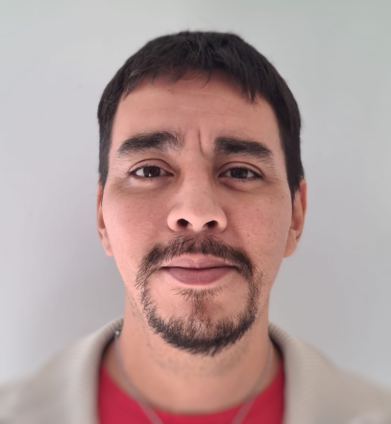

Hola, soy Lucas Barros desarrollador detallista y empático, apasionado por frontend y backend, siempre aprendiendo y mejorando.
Desarrollo Web Full Stack
Un Poco Sobre Mí
Soy un profesional detallista y organizado, apasionado por no dejar cosas pendientes y mantener la prolijidad en todo lo que hago. Me gusta escuchar a la gente y aprender de sus experiencias. En el ámbito del desarrollo web, disfruto trabajando tanto en el backend como en el frontend. Sin embargo, prefiero seguir los lineamientos de un diseñador en el frontend. Mi enfoque meticuloso y mi compromiso con la calidad aseguran que cada proyecto en el que participo sea llevado a cabo con el máximo cuidado y precisión.
Mi Trayecto de Aprendizaje:
Coderhouse a Digitalhouse
Inicié mi formación en Coderhouse, donde adquirí conocimientos básicos de HTML y CSS, además de familiarizarme con Bootstrap. Esta base sólida me permitió avanzar en mi camino como desarrollador web. Posteriormente, continué mi formación en Digitalhouse, donde profundicé en el lenguaje de programación JavaScript y empecé a explorar el mundo de React. Estos conocimientos me han permitido desarrollar aplicaciones web dinámicas y mejorar constantemente mis habilidades en el desarrollo tanto de frontend como de backend.
Frontend Meet
Proyecto 01
Diseño de Meet para Frontend Mentor, un desafio que incluye tres versiones: mobile, tablet y desktop
Splitter
Proyecto 02
Diseño de Spliter para Frontend Mentor, un desafio que incluye dos versiones: mobile y desktop. Funcionalidad en Javascript, calculador para propina
Time Tracking Dashboard
Proyecto 03
Diseño de Meet para Frontend Mentor, un desafio que incluye dos versiones: mobile y desktop. Ver la disposición óptima del sitio dependiendo del tamaño de la pantalla del dispositivo. Ver los estados de desplazamiento para todos los elementos interactivos de la página. Cambiar entre la visualización de estadísticas Diarias, Semanales y Mensuales